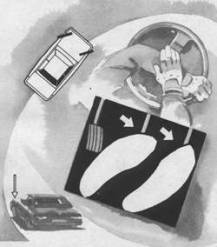

Повышение управляемости в повороте
Многие молодые водители стремятся проявить свою лихость в повороте визгом покрышек, считая, что это и есть проявление высокой скорости движения. Однако это глубокое заблуждение. Визг шин в повороте – это сигнал водителю о совершенной ошибке, соскальзывании, сносе управляемых колес. Это явление сопровождается торможением и частичной потерей управляемости, т. е. чем больше визга, тем меньше скорость и, естественно, профессионализма. Водитель экстракласса стремится к полной бесшумности прохождения поворота на грани сноса передних колес. Если снос возник, то его можно погасить уменьшением оборотов двигателя или выравниванием автомобиля в тех случаях, где это позволяют ширина проезжей части и заданная траектория движения.
Для повышения безопасности без снижения скорости можно воспользоваться специальным приемом. Это легкое подтормаживание левой ногой на дуге длинного крутого поворота при постоянном дросселировании. Таким приемом легко прекратить соскальзывание переднего наружного колеса и загрузить его. Касание тормозной педали должно, быть легким и дозированным, исключающим блокирование колес.

Повысить управляемость в крутом повороте вам поможет загрузка наружного переднего колеса при помощи торможения двигателем или легкого подтормаживания левой ногой. Помните, что полное прекращение тяги (“закрытый газ”) не повысит, а снизит безопасность.
Нужно помнить, что допущенная ошибка чревата серьезными последствиями. Если заблокируется наружное переднее колесо, автомобиль перейдет к прямолинейному движению, если одно из задних, возникает занос или вращение автомобиля.
Есть еще одна опасность этого приема, особенно для тех водителей, которые недавно пересели с классического варианта автомобиля (двигатель спереди, ведущие колеса задние) на переднеприводный.
Если подторможенное наружное колесо попадает на участок с низким коэффициентом сцепления (лед, песок, вода, грязь), то сразу возникают его блокирование и потеря управляемости автомобиля. Вместо того чтобы прекратить торможение и дать двигателю “вытянуть” автомобиль на дугу поворота, водитель “закрывает газ”, как он привык на классическом варианте автомобиля. Потеря тяги при заторможенных колесах для переднеприводного автомобиля – это полная потеря управляемости и вынос с полотна дороги.
Прием, описанный выше, очень эффективен на крутых горных поворотах, серпантине, обратных поворотах при высоком коэффициенте сцепления шин с дорогой. Происходящая в результате действия центробежной силы перегрузка наружных колес усиливает управляемость автомобиля (при условии высокого давления в шинах и минимальной подворачиваемости покрышки), а дополнительная загрузка переднего колеса подтормаживанием еще больше увеличивает управляющий эффект.
Прием позволяет существенно повысить скорость автомобиля в повороте.